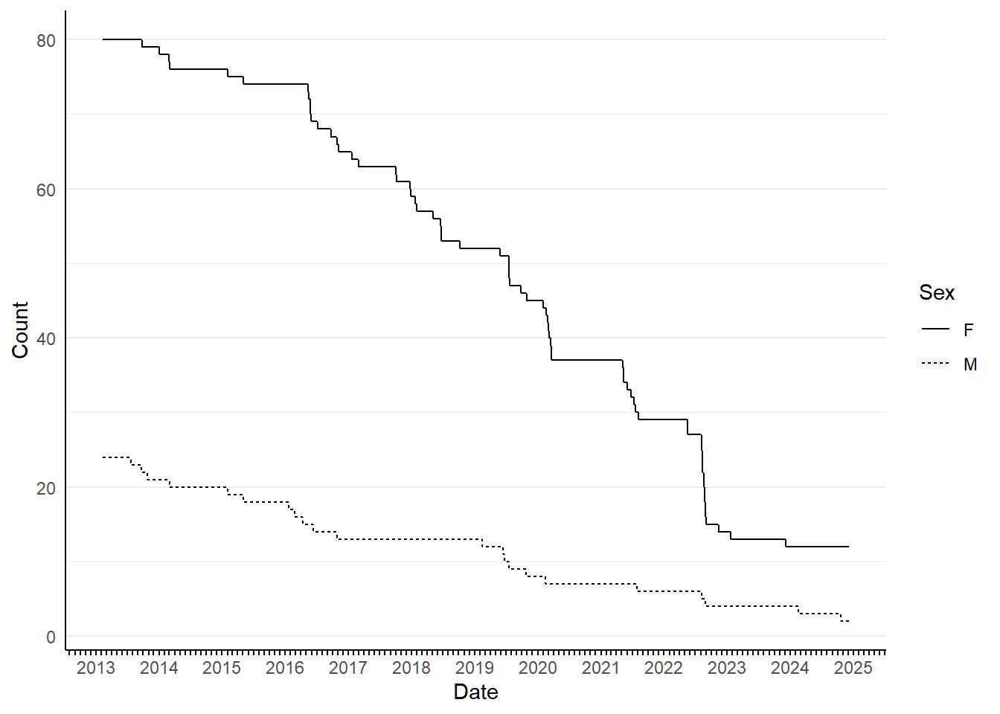

Yuma Cove backwater population analysis
Introduction
This summary analysis for Yuma Cove backwater is auto-generated and results stated within should be considered preliminary. These results are based on an analysis of stocking, capture, and PIT scanning records starting on 2013-01-01 and ending on 2025-04-25. Several approaches are used to assess the overall status of the population in the backwater. Known survival analysis provides a detailed fish by fish accounting of the fish that are known to be alive in the backwater based on PIT scanning. In backwaters with nearly continuous PIT scanning, these known survivor numbers should be no less than 95% of the actual PIT tagged population, as all fish are provided at a minimum 60 days of PIT scanning regardless of tagging date. Backwater sampling events are used to evaluate recruitment, size class distribution, and proportion of tagged to untagged fish in the backwater. The tagged to untagged proportion is used in conjunction with the known survival analysis to provide point estimates of the adult population size. The biomass of the most recent sampling event is estimated based on capture records and a length-weight relationship established from all backwater capture data. Any reduction of biomass through harvest or mortality is assessed through PIT scanning conducted after the most recent autumn harvest.
Known Survival
Known survival analysis uses PIT scanning data to track the number of PIT tagged fish alive in the backwater on any given date. For a fish to be included in the total, it must have been tagged and release prior to the date (x-axis), and it must have been scanned at least once 60 days after it’s release date. This avoids including fish that were scanned within a few days of tagging, but died before contributing significantly to the population. For example, a fish tagged and released on January 1, 2019 will be included in the known population total for every day after January 1, 2019 as long as it was scanned once after May 1, 2019. If it was never scanned again after May 5, 2019, then it will be a part of the known population from January 1, 2019 through May 5, 2019, and removed from the population for all subsequent dates.
The initial stocking into Yuma Cove backwater on 2013-02-11 consisted of 100 females and 100 males, but only 111 (81 females and 30 males) survived to 60 days post-stocking based on PIT scanning data (Figure 1). The stair step pattern of known survivors from the initial stocking is indicative of a dramatic decline in survivor numbers over summer months for both sexes. Based on PIT scanning after the most recent spawning season (2024), the remaining known survivors from the initial stocking include 4 females and 2 males. This represents a mean annual survival of 78.4% over 12 years.
When all tagged fish are included in the known population analysis, increases to the number of known survivors are possible due to the tagging and survival of naturally recruited fish or fish from supplemental stocking (Figure 2 and Figure 3). Most fish captured, tagged, and released were given juvenile or unknown sex designations. The proportion of fish with unknown sex therefore increased over time, whereas juvenile fish rarely survived long enough to be added to the known survivors count (Figure 2).


The most recent count (PIT scanning after March of 2025) of known survivors in Yuma Cove backwater is 90 fish (Table 1). The survivors tagging history is a combination of stocking and tagging events conducted in the backwater since the original stocking in 2013. Mean TL is the mean total length recorded of all known survivors at tagging.
| Event | Year | Month | TL (mm) | M | F | U | J |
|---|---|---|---|---|---|---|---|
| stocking | 2013 | February | 393 | 2 | 0 | 0 | 0 |
| stocking | 2013 | February | 417 | 0 | 4 | 0 | 0 |
| stocking | 2015 | January | 435 | 0 | 1 | 0 | 0 |
| stocking | 2020 | February | 361 | 0 | 0 | 3 | 0 |
| capture | 2015 | May | 425 | 0 | 0 | 24 | 0 |
| capture | 2016 | May | 480 | 0 | 0 | 1 | 0 |
| capture | 2016 | May | 450 | 2 | 0 | 0 | 0 |
| capture | 2016 | May | 451 | 0 | 4 | 0 | 0 |
| capture | 2017 | May | 477 | 4 | 0 | 0 | 0 |
| capture | 2017 | October | 367 | 0 | 0 | 11 | 0 |
| capture | 2017 | October | 530 | 0 | 1 | 0 | 0 |
| capture | 2020 | November | 473 | 0 | 0 | 14 | 0 |
| capture | 2020 | November | 494 | 1 | 0 | 0 | 0 |
| capture | 2021 | October | 507 | 0 | 0 | 11 | 0 |
| capture | 2022 | November | 540 | 0 | 4 | 0 | 0 |
| capture | 2023 | November | 338 | 0 | 0 | 0 | 2 |
| capture | 2023 | November | 496 | 0 | 1 | 0 | 0 |
Backwater Sampling Events
Sampling events in Yuma Cove backwater have resulted in the capture and tagging of 0 fish (Table 2). Most fish captured were small and did not survive long enough to contribute to the overall spawning population. To separate the small fish unlikely to contribute to the adult spawning population from the larger subadult to adult fish, all captured fish were broken down into three size classes based on the TL at capture; 1 <350, 2 >=350 and <500, 3 >=500 mm TL.
| Year | Month |
Size class
|
||
|---|---|---|---|---|
| 1 | 2 | 3 | ||
Size Class 3 fish were assumed to all be adults, whereas size class 2 fish were assumed to be a mix of subadult and adult fish at the time of capture. Both size classes together made up the entirety of the potential spawning population. Although some size class 2 fish were immature at capture, they had a similar survival profile to size class 3, and were likely to mature a year or two following their tagging and release. The proportion of potential spawning fish (size class 2+) that were recaptures (captured with a tag) were assumed to represent the proportion of the total potential spawning population that was PIT tagged within the backwater (Table 3).
| Year | Month |
Recaptured
|
Proportion | |
|---|---|---|---|---|
| Y | N | |||
| 2013 | November | 79 | 10 | 0.888 |
| 2014 | January | 9 | 1 | 0.900 |
| 2014 | May | 74 | 0 | 1.000 |
| 2015 | May | 42 | 124 | 0.253 |
| 2016 | May | 44 | 56 | 0.440 |
| 2016 | October | 14 | 13 | 0.519 |
| 2017 | May | 9 | 7 | 0.562 |
| 2017 | October | 36 | 55 | 0.396 |
| 2018 | October | 23 | 15 | 0.605 |
| 2019 | November | 37 | 42 | 0.468 |
| 2020 | November | 56 | 56 | 0.500 |
| 2021 | October | 40 | 25 | 0.615 |
| 2022 | November | 25 | 19 | 0.568 |
| 2023 | November | 13 | 7 | 0.650 |
Spawning Adult Population Size
The total spawning population (tagged and untagged) was estimated from the recapture proportion (of size class 2+ fish) for all years when there is a autumn or early winter (after September) capture event. The known survivors (Figure 4) for each year as of December 1st was divided by the autumn recapture proportion for the same year. The recaptures and total captures used to calculate recapture proportion were adjusted for fish that avoid detection or that were harvested during the capture event by removing fish captured but never scanned after the capture event. Population estimates were calculated for all years with an autumn sample of more than 10 total captures after adjustment. The 95% confidence intervals were derived from the binomial distribution based on the autumn capture values (trials = total captures, successes = recaptures).

Estimating Biomass
Total length (TL) and mass (g) have been recorded for 1988 fish in Yuma Cove backwater (Figure 5). The parameters of a length-weight relationship were estimated using maximum likelihood based on these records and was used to estimate mass for fish when TL was recorded but mass was not. One potential consequence of overcrowding in a backwater and subsequent resource limitation is that the length-weight relationship might change over time. However, this was not the in Yuma Cove backwater as the length-weight relationship was consistent regardless of year (Figure 5); most recent measurements in black.

Total biomass of the most recent autumn sampling event 2023 was calculated in kilograms (kg) from individual mass as measured when available or mass estimates based on the length-weight relationship (Table 4). Harvest and mortality reduced the available biomass post-sampling, and so the available biomass from surveyed fish was calculated based on recent PIT scanning (contacted at least once in the current year).
| SizeClass | Mean TL (mm) | Biomass (kg) | Count | Alive | Alive Biomass (kg) |
|---|---|---|---|---|---|
| 1 | 154 | 16.148 | 266 | 1 | 0.245 |
| 2 | 467 | 6.798 | 7 | 2 | 1.648 |
| 3 | 536 | 20.310 | 13 | 3 | 5.145 |
This biomass estimate isn’t the total population biomass. The known population in the backwater is 90 fish, and the estimated total population is 546. 92% of the known population has been at large for more than 3 years, (83 out of 90 fish, Table 1). It is likely that most if not all of those fish are Size Class 3 adults.